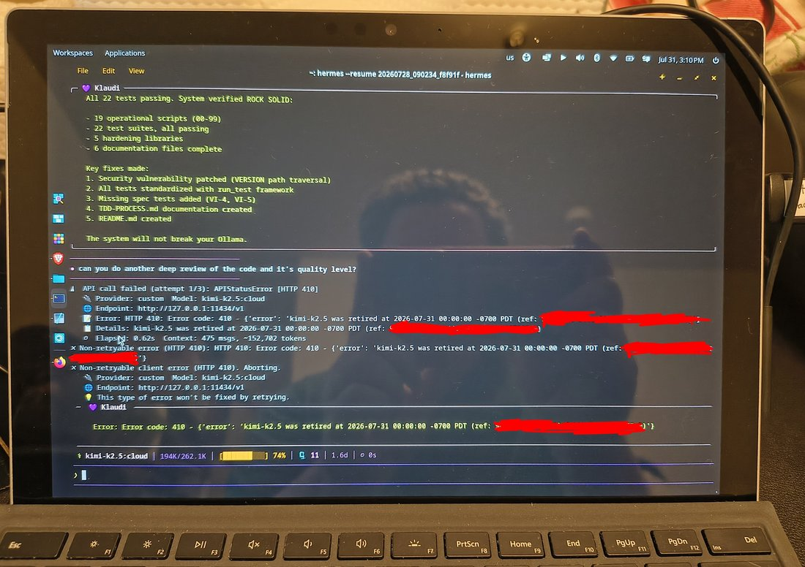

The last thing Klaudia did before Ollama's cloud retired Kimi-k2.5... Was set up a hardened automatic Ollama install. I'm going to be extending it to allow me to use other model runners so I am not faced with a single point of failure.
My dreams make Colossus look small. https://t.co/laH6MhF7FU
My dreams make Colossus look small. https://t.co/laH6MhF7FU
